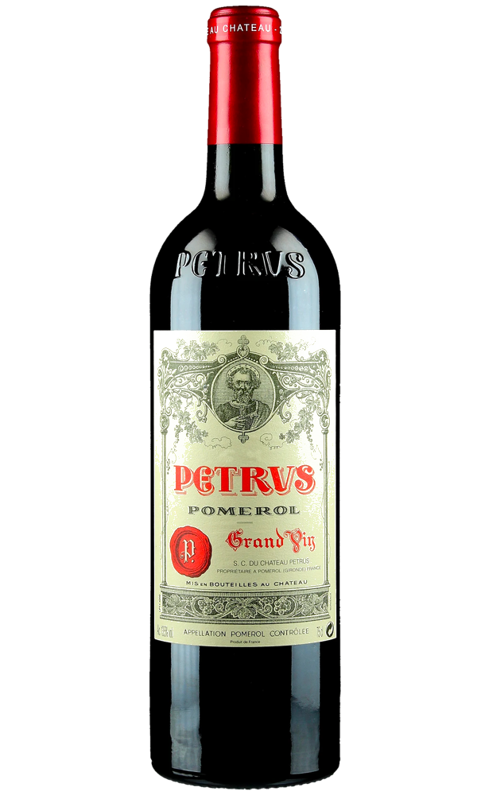

Pomerol · Bordeaux right bank · validated regime
Pomerol sits on blue clay. A wet September dilutes the wine; a dry one concentrates it. We measure water stress in the soil and the thirst of the air above it, then seal our prediction before any critic tastes the vintage. Below, our model against the critics that move the market.
For thirty-five years, soil water in September has tracked Pétrus's score better than any tasting note. In 2026 we added a second physical axis: Vapour Pressure Deficit, the atmospheric demand that pulls water from the vine. Soil moisture measures what the ground holds; VPD measures how hard the air pulls it away. Together they explain 69% of vintage variance, double what soil alone could do. The white line is us. The dashed line is Wine-Searcher. Where it stops, because critics haven't tasted 2025 yet, we keep going.

Our target is the Wine-Searcher aggregate, not a single critic. We tested Wine Advocate's individual scores too, and accuracy fell by a third. The critic adds a personal variance the atmosphere cannot predict. That gap is the whole point: physics predicts the consensus, not the mood of one palate.
A model that hides its edges is a sales pitch, not a science. Ours has two clear limits, and both are features, not bugs.
A perfect score is the critic's mood on a great day. We measure whether the vintage is physically sound, not whether Parker felt generous. Our line sits below the spikes on purpose: we predict ripeness, not enthusiasm.
The rain-compromised vintages, 1992, 1999, 2024, we call every time. We miss, by little, some average years in the damp-moderate middle. The model is a detector of compromise, not an oracle of greatness.
The rain penalty is not constant. Parcel-by-parcel selection after 2000 compresses it by 42%. A wet 1992 scored 90; a wetter 2024 scores around 95: selection recovered points the rain used to take. And a third signal runs orthogonal to both: when the air is hot and dry, it pulls water from the vine regardless of what the soil holds. These three physics do not overlap.
Ignore these three physics and accuracy collapses. The two-epoch soil model alone explained 45% of variance. Adding atmospheric demand raised it to 58%. Adding the heat-damage flag raised it to 69%. Each layer earns its place.
The second signal · satellite
Without knowing its name. Without its history. From space.
Weather data sees one pixel for all nine estates, blind to what separates them. So we went to satellite, ten metres per pixel, and measured how green each vine looks from space. Climate tells us which vintage; the satellite tells us which vineyard. Two axes that never overlap. We can score a vineyard we have never seen, to within 1.74 points, without knowing its name. The correlation between greenness and price is −0.69. Negative. The bars below show vigour, the greener the vine. Read the scores beside them: as the green grows, the score falls.
Blue clay strangles the best vines into noble suffering: small canopy, concentrated fruit. Sandy soils give easy water, lush vegetation, lesser wine. The satellite doesn't measure vine health. It measures how much the vine suffers. And at Pomerol, suffering is the price of greatness.
Climate reanalysis and satellite imagery from public European sources. No proprietary feed, no relationship with anyone who sells wine.
Every prediction is hashed and timestamped on the Bitcoin blockchain before a critic tastes the vintage. The record predates the verdict.
We use Leave-One-Vintage-Out (LOVO) validation: the tested year never enters its own training set. No k-fold leakage, no in-sample flattery. Every accuracy figure on this page was earned on data the model had never seen.
We tested everything. Most failed. What remained is what you see.
| Hypothesis tested | Result |
|---|---|
| Soil moisture alone (1 epoch) | ∗∗∗ |
| Growing degree days | ∗∗∗ |
| Véraison date (GFV model) | ∗∗∗ |
| Annual NDVI / NDMI greenness | ∗∗∗ |
| Spring frost signal | ∗∗∗ |
| DTR September (diurnal range) | ∗∗∗ |
| Soil moisture · two epochs + VPD + heat flag | active ✓ |
"The vine remembers every drought, every frost, every warm September night. We only learned to read its memory."TerroiRisk · 2026